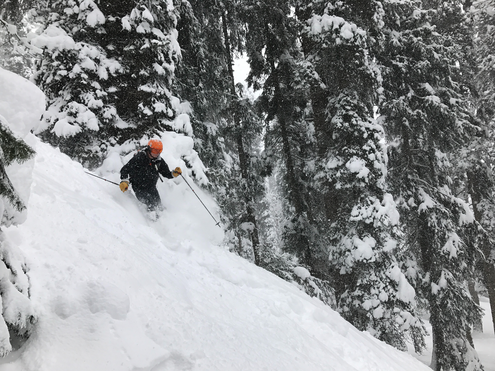
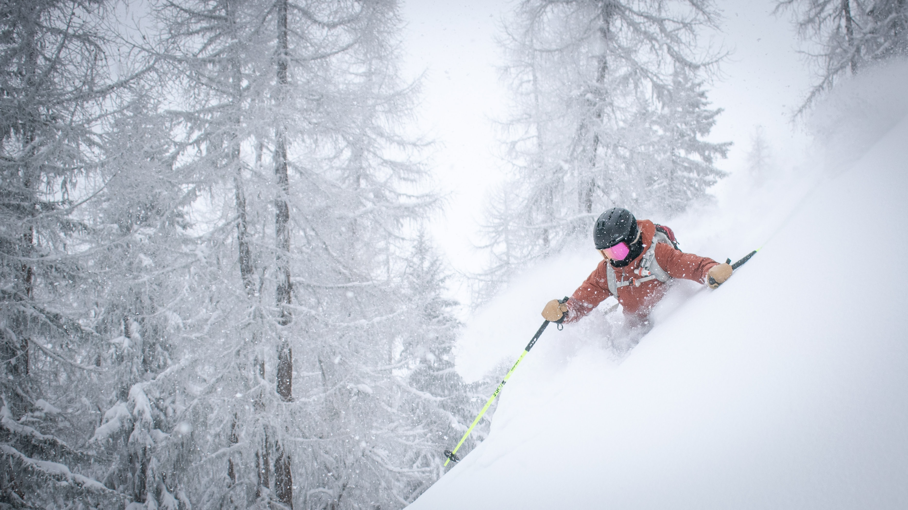
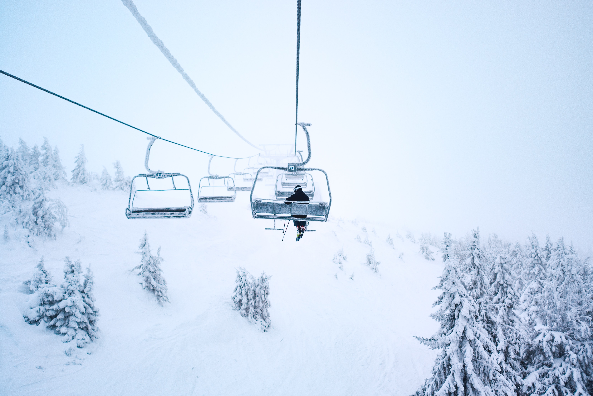
Adventure enthusiasts must surely indulge in skiing here as it is one of the top things to do in Gulmarg in winter. Stand amidst the snowy peaks surrounded by lush green coniferous forest. Feel the adrenaline rush while swiftly gliding down the snow-carpet covering the valley. Apharwat Peak is one of the best spots for indulging in this activity. You can hire ski equipment from the Government ski rental shops stationed here. There are also experienced trainers from whom you can learn this sport.
Best Time to Visit: January and February are the best months to visit Gulmarg for skiing as you will get an enormous amount of snow over there
How to Reach: You can either drive or hire a private camp to reach the base of the Apharwat Peak
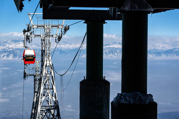
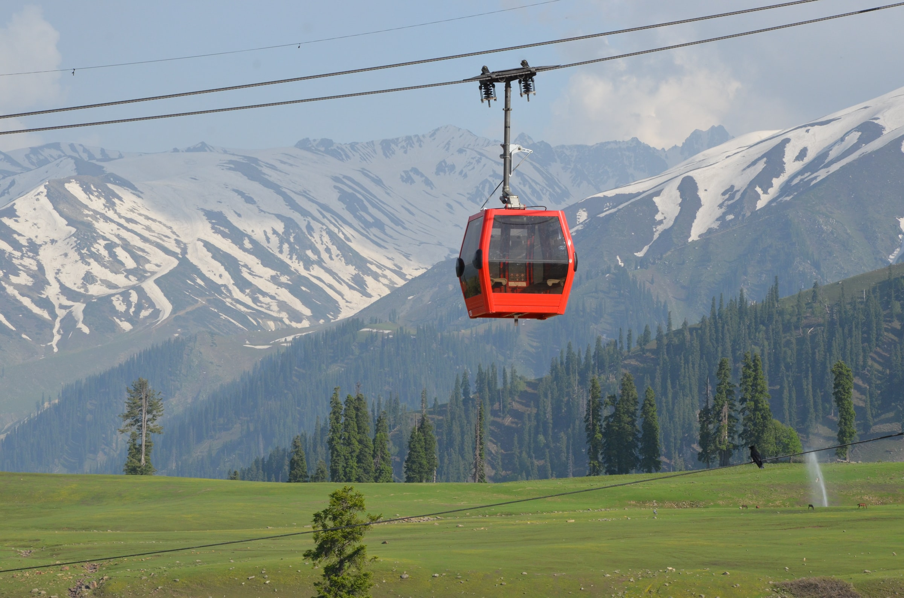
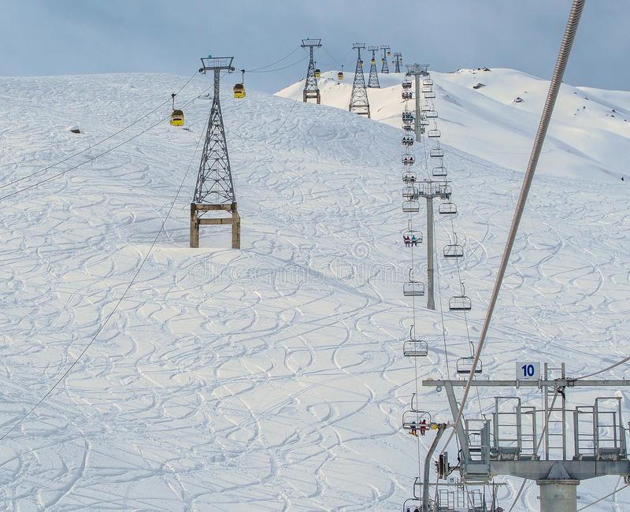
One of the most exciting things to do in Gulmarg, Kashmir that enchants all the visitors is the Gondola ride. The Kongdori Gulmarg gondola is the 2nd highest cable-car line in the world. It is divided into 3 phases – Phase 1 is from Gulmarg to Kongdori; Phase 2 is from Kongdori to Apharwat; and Phase 3 is the Chair Lift phase from Kongdori to Mary Shoulder. The Gondola rides offer you the most spellbinding sights of both Gulmarg and Khilanmarg. Phase 1 lifts you up to the Kongdori Station which is at the height of about 8500 feet. And Phase 2 takes you to an altitude of almost 12300 feet. Enjoy the view of LOC, Nand Devi, and Pir Panjal Ranges.
Best Time to Visit: March to June
Gulmarg Gondola Ticket Price:
Phase 1 –INR740 per Adult
Phase 2 – INR 950 per Adult
Chairlift – Adult INR 270
How to Reach: Kongdori is just 20 minutes away from Gulmarg. Taxis can be hired or you may also reach there by walking on your own.
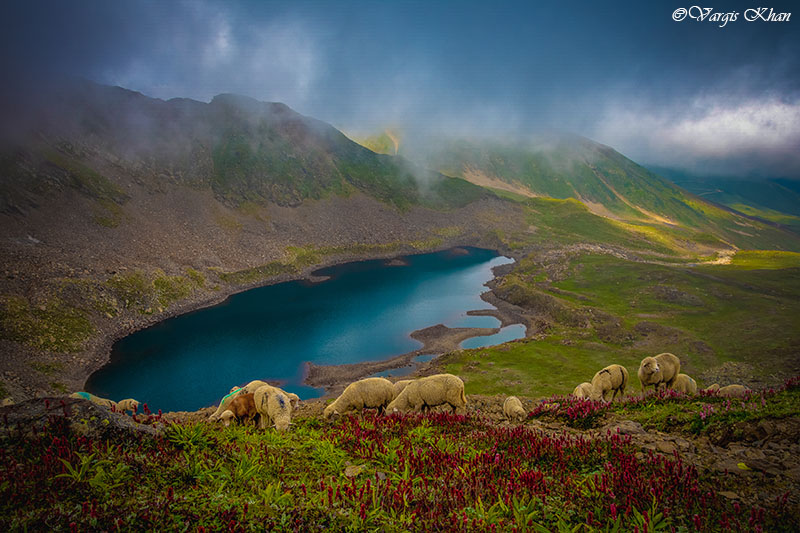
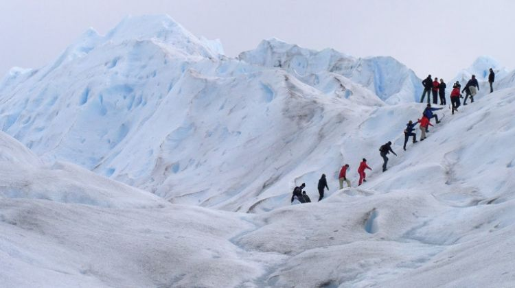
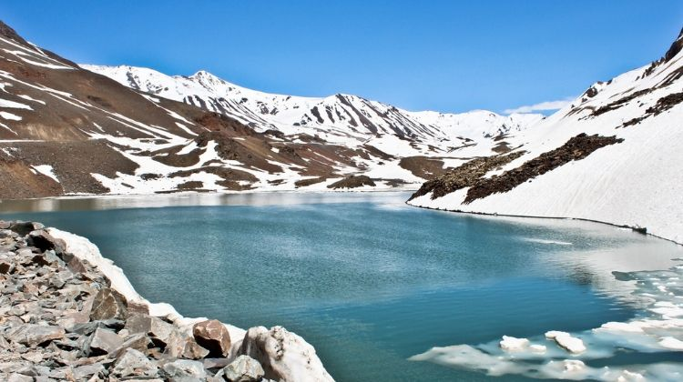
Trekking is also one of the best things to do in Gulmarg. You would not be able to resist the magical charm of this completely frozen lake in Gulmarg. The breathtaking sight of the Alpather Lake comes as the perk of a trekking journey. It is actually located at the foot of the twin Apharwat Peak at an approximate height of 4400 meters. Interestingly, the lake remains frozen even in the months of May and June. Enormous ice chunks floating on the lake adds sparkle-effect to the view. Surrounded by rocky mountains and meadows, this is a great place to relax after the tiring sessions of trekking or skiing.
Best Time to Visit: November to mid-June (Winter) and June to September
How to Reach: From Gulmarg, you may either go by road or opt for trekking as well. But the best way to reach this lake is Gondola. Pony ride can also be taken.
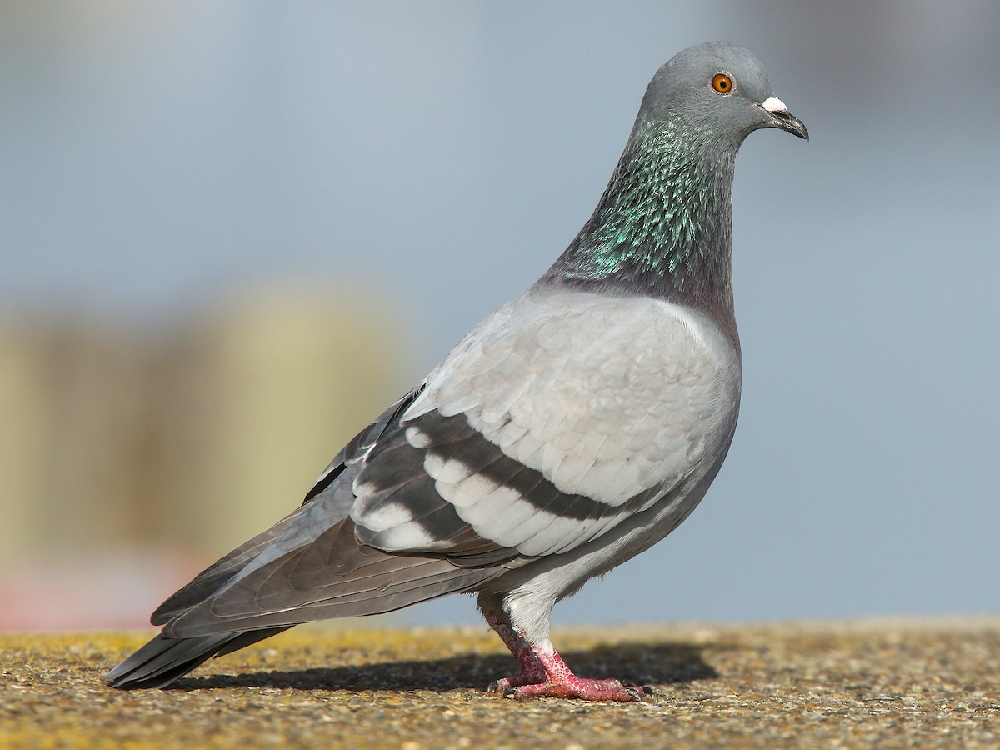
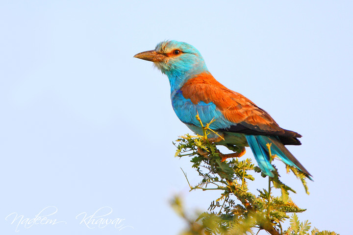
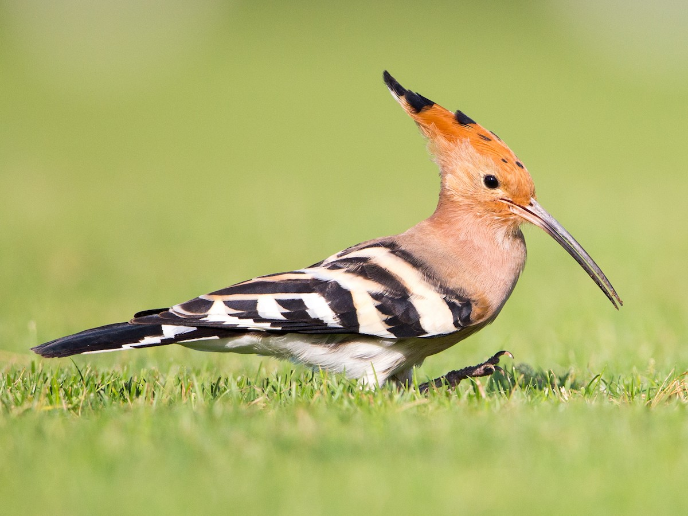
Gulmarg Biosphere Reserve is spread over 180 sq. km and is situated at 2400 meters to 4300 meters above sea level, known for its flora, fauna, and wildlife.
Gulmarg Biosphere Reserve is spread over 180 square km and is situated at an altitude of about 2400 meters to 4300 meters above sea level.
It is known for its flora, fauna, and wildlife. It is also a habitat for birds. Bird watchers can find many species of birds here, such as vulture, monal, sun kok, koalas, and migratory birds like European hoopoe, wild crow, blue rook pigeon, Kashmir roller, etc.
This reserve provides shelter to many wildlife like coo, goat, leopard, red fox, musk deer, among many others.
Large number of plants and shrubs like Sauraberia torments, Indigofera heteranta, Vibram sp. are found here.
Apart from this, trees like pine, deodar, chestnut, etc. are found.
It is a paradise for enthusiasts and adventure lovers.